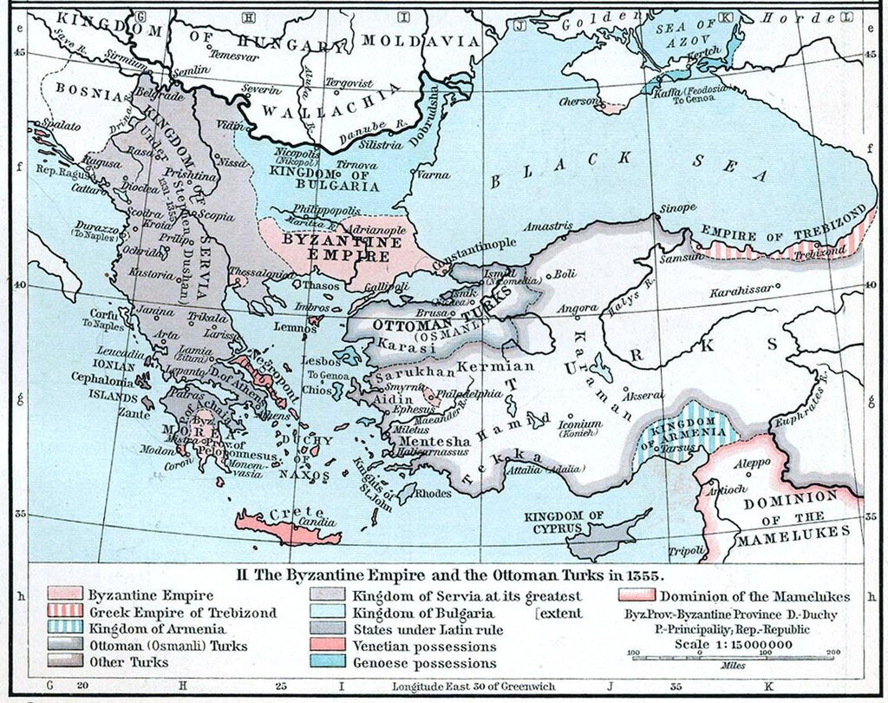
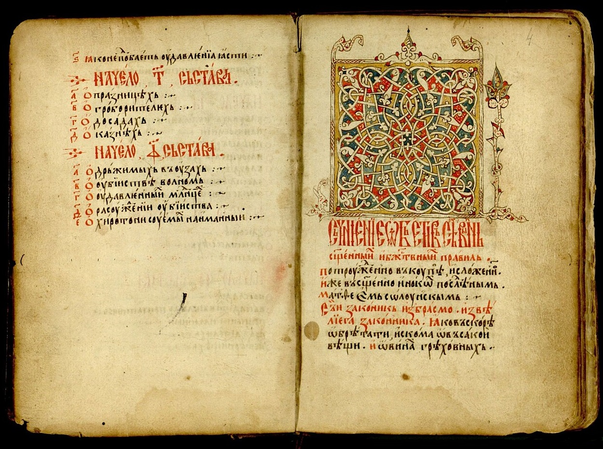
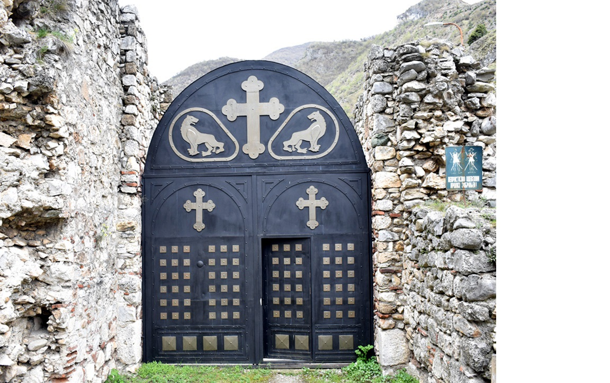
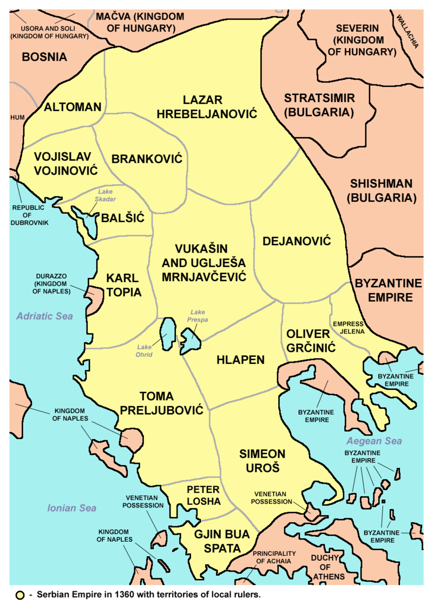

Freska cara Dušana, manastir Lesnovo
Car Stefan Dušan Nemanjić, poznat kao Dušan Silni, bio je najmoćniji srpski vladar i jedna od najznačajnijih ličnosti srednjovekovne Evrope. Rođen je oko 1308. godine kao sin kralja Stefana Dečanskog i kraljice Teodore. Još kao mlad pokazivao je izuzetne vojne i diplomatske sposobnosti. Već 1331. godine, posle sukoba sa ocem, preuzeo je presto i krunisan je za kralja u Skoplju.
Tokom svoje vladavine, Dušan je vodio brojne uspešne vojne pohode. Osvojio je značajne delove Vizantijskog carstva, uključujući Epir, Tesaliju, veliki deo Makedonije i Trakije. Njegova država postala je najveća u istoriji srednjovekovne Srbije. Krunisan je za cara Srba i Grka na Vaskrs, 16. aprila 1346. godine u Skoplju, uz prisustvo srpskog patrijarha, bugarskog patrijarha i predstavnika Svete Gore.
Mapa Dušanovog Carstva
Godine 1349. u Skoplju je donet prvi deo Dušanovog zakonika, a 1354. u Seru drugi deo. Zakonik je sadržao preko 200 članova i regulisao sve aspekte društvenog, crkvenog i pravnog života. Bio je jedan od najrazvijenijih pravnih sistema u Evropi tog doba. Dušan je insistirao na pravdi i redu, strogo kažnjavajući korupciju, krađu i izdaju.
Stranica iz Dusanovog Zakonika 14.vek
Car Dušan bio je veliki ktitor. Njegova najpoznatija zadužbina je manastir Svetih Arhangela kod Prizrena, podignut u blizini stare carske prestonice. Manastir je bio impozantan spoj arhitekture i umetnosti, a Dušan je u njemu i sahranjen. Podržavao je obnovu i širenje mnogih manastira, kako u Srbiji tako i u Grčkoj, uključujući i svetogorske svetinje.
Manastir Sveti Arhangeli, kanjon reke Prizrenske Bistrice u Metohiji
Dušan je bio veliki zaštitnik pravoslavlja. Podržavao je monaški život i učvrstio samostalnost Srpske crkve. Osnivanjem Srpskog patrijarhata u Peći 1346. godine, Srpska arhiepiskopija je uzdignuta na rang patrijaršije. Dušan je darivao manastir Hilandar i druge svetogorske manastire zlatom, zemljom i vinogradima.
Tokom njegove vladavine kovan je zlatni i srebrni novac visokog kvaliteta, po uzoru na vizantijski novac. Dušanov zlatnik nosio je njegov lik sa carskom krunom i krstom u ruci. Ovi novčići predstavljali su simbol suverenosti i ekonomske moći, i korišćeni su širom Balkana u trgovini i diplomatiji.
Car Dušan je iznenada preminuo 20. decembra 1355. godine, tokom priprema za pohod na Carigrad. Sahranjen je u manastiru Svetih Arhangela. Nasledio ga je sin Uroš, poznat kao Uroš Nejaki, koji nije uspeo da održi jedinstvo carstva. Dušanovo ime i delo ostali su duboko ukorenjeni u srpskoj svesti kao simbol moći, zakona i duhovne veličine.
Srpsko carstvo 1360. godine, u vreme cara Uroša, sa teritorijama oblasnih gospodara.
Poslednje ažuriranje: jul 2025.